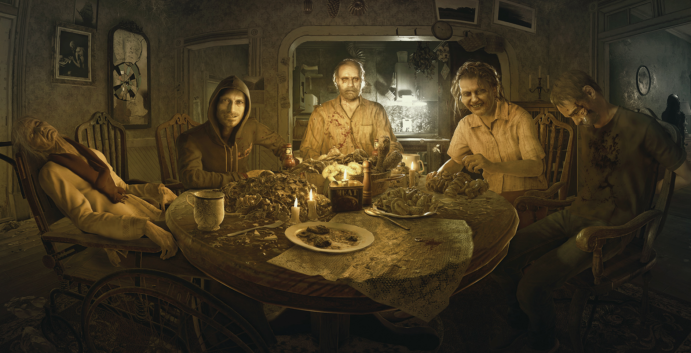
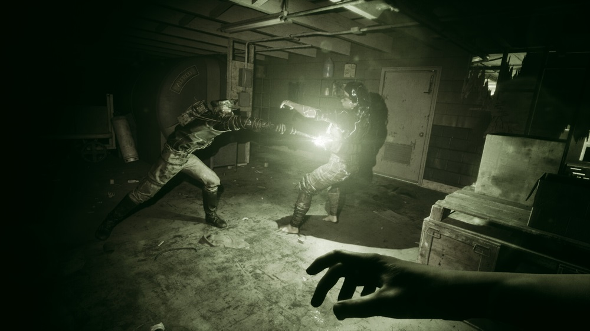

Horror games in the modern era are not defined by a single formula—they are defined by change. Rather than following one structure, the genre has fragmented, expanded, and continuously reinvented itself. What began as survival-based design and later shifted into psychological exploration has now become something more fluid. Modern horror pulls from its past while reshaping how fear is experienced in the present.
One of the most significant shifts in this era is immersion. Games like Outlast redefined how players engage with fear by removing combat almost entirely. The player is left defenseless, forced to navigate hostile environments with only the ability to run, hide, and observe. This design intensifies vulnerability, placing the player directly within the experience rather than at a distance from it. The perspective is immediate, the danger constant, and the sense of control minimal.

This focus on immersion is further developed in Resident Evil 7: Biohazard, which marked a major reinvention of a long-standing franchise. By shifting to a first-person perspective, the game abandoned the detached camera systems of earlier titles and placed players directly into the environment. This change was not just visual—it redefined how fear functioned. Encounters became more personal, spaces more oppressive, and tension more sustained. Resident Evil Village continues this evolution, blending traditional survival elements with modern pacing and design, showing how established series can adapt without losing their identity.

At the same time, modern horror has expanded into more conceptual and philosophical territory. SOMA represents a shift toward existential horror, where the fear does not come solely from external threats, but from ideas—identity, consciousness, and what it means to exist. The game challenges players not only to survive, but to reflect, leaving a lasting psychological impact that extends beyond the experience itself.
Other titles approach horror through stylization and abstraction. Little Nightmares presents a distorted, almost dreamlike world where scale, form, and environment create unease. The horror is not explicit, but implied through design, echoing earlier eras while presenting something distinctly modern. Meanwhile, The Outlast Trials expands the idea of survival into shared experiences, introducing cooperative elements that reshape how fear can be encountered—not alone, but alongside others.

What defines this era is not a single direction, but the ability to move between them. Modern horror can be immersive, psychological, experimental, or symbolic—often all at once. It draws from the limitations of early design, the depth of psychological horror, and the advancements of new technology to create experiences that are constantly evolving.
Horror no longer exists in a fixed form. It adapts, shifts, and reinterprets itself across different styles and systems. Yet at its core, it remains focused on the same fundamental idea: placing the player in a space of uncertainty, where control is limited and understanding is never complete.
This is not a continuation of what came before—it is a reinvention.